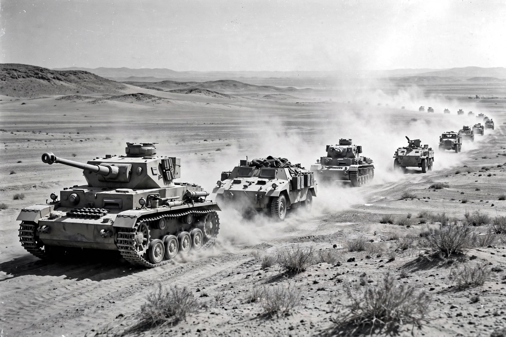

North African campaign
The North African campaign of the Second World War took place in North Africa from 10 June 1940 to 13 May 1943, fought between the Axis powers (Germany and Italy) and the Allies (principally Britain and the Commonwealth, later joined by the United States and Free France) for control of Libya, Egypt, and French North Africa. It included the Western Desert campaign, Operation Torch, and the Tunisian campaign, and was marked by the mobile armoured warfare of the "Desert War".

| North African campaign | |
|---|---|
| Date | 10 June 1940 – 13 May 1943 |
| Location | Libya, Egypt, Algeria, Morocco, Tunisia |
| Result | Allied victory |
| Belligerents | United Kingdom, United States, Free France and allies vs Germany and Italy |
| Commanders | Bernard Montgomery, Dwight D. Eisenhower vs Erwin Rommel, Giovanni Messe |
Course of the war
Italy invaded Egypt in September 1940 but was routed by the British Operation Compass. Germany sent the Afrika Korps under Erwin Rommel in early 1941, and the front swung back and forth across Cyrenaica through 1941 and 1942, with the port of Tobruk besieged twice. Rommel's victory at Gazala in mid-1942 carried the Axis into Egypt, where they were checked at the First Battle of El Alamein; in October–November 1942 General Bernard Montgomery's Eighth Army decisively won the Second Battle of El Alamein. Days later, Operation Torch landed American and British forces in Morocco and Algeria. Trapped between two Allied armies, the Axis forces in Tunisia surrendered in May 1943, with some 275,000 men taken prisoner.
Significance
The campaign secured Allied control of the Mediterranean sea lanes and the Suez Canal, eliminated Italy's African empire, provided a springboard for the invasions of Sicily and Italy, and gave American troops their first major ground combat experience against Germany in the west.